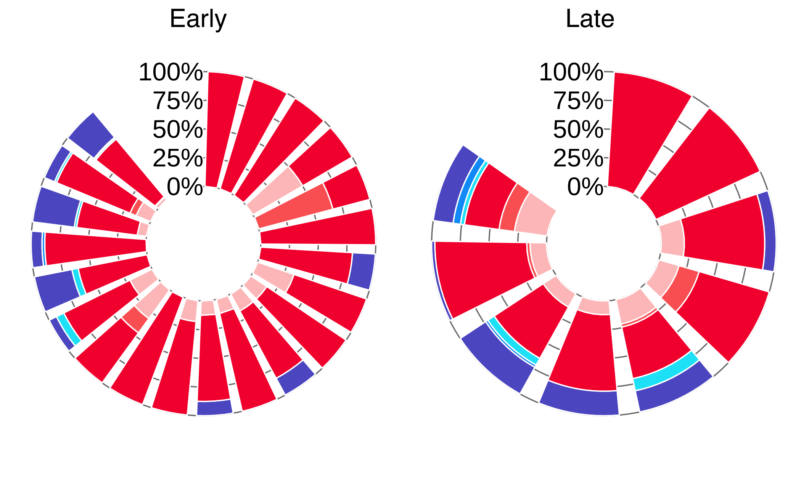

Distribution of CTC counts isolated in breast cancer patients
Francesc Castro-Giner
2022-02-23
Last updated: 2022-04-26
Checks: 7 0
Knit directory:
diamantopoulou-ctc-dynamics/
This reproducible R Markdown analysis was created with workflowr (version 1.6.2). The Checks tab describes the reproducibility checks that were applied when the results were created. The Past versions tab lists the development history.
Great! Since the R Markdown file has been committed to the Git repository, you know the exact version of the code that produced these results.
Great job! The global environment was empty. Objects defined in the global environment can affect the analysis in your R Markdown file in unknown ways. For reproduciblity it’s best to always run the code in an empty environment.
The command set.seed(20220425) was run prior to running
the code in the R Markdown file. Setting a seed ensures that any results
that rely on randomness, e.g. subsampling or permutations, are
reproducible.
Great job! Recording the operating system, R version, and package versions is critical for reproducibility.
Nice! There were no cached chunks for this analysis, so you can be confident that you successfully produced the results during this run.
Great job! Using relative paths to the files within your workflowr project makes it easier to run your code on other machines.
Great! You are using Git for version control. Tracking code development and connecting the code version to the results is critical for reproducibility.
The results in this page were generated with repository version 0ded9f5. See the Past versions tab to see a history of the changes made to the R Markdown and HTML files.
Note that you need to be careful to ensure that all relevant files for
the analysis have been committed to Git prior to generating the results
(you can use wflow_publish or
wflow_git_commit). workflowr only checks the R Markdown
file, but you know if there are other scripts or data files that it
depends on. Below is the status of the Git repository when the results
were generated:
Ignored files:
Ignored: .Rhistory
Ignored: .Rproj.user/
Untracked files:
Untracked: analysis/0_differential_expression_gsea_gsva.md
Untracked: analysis/about.md
Untracked: analysis/br16_dge.md
Untracked: analysis/br16_pca.md
Untracked: analysis/core_gene_sets.md
Untracked: analysis/gsea_across_models.md
Untracked: analysis/index.md
Untracked: analysis/license.md
Untracked: analysis/patients_ctc_counts_distribution.md
Untracked: data/differential_expression/
Untracked: data/patients/
Untracked: data/resources/
Untracked: data/sce/
Note that any generated files, e.g. HTML, png, CSS, etc., are not included in this status report because it is ok for generated content to have uncommitted changes.
These are the previous versions of the repository in which changes were
made to the R Markdown
(analysis/patients_ctc_counts_distribution.Rmd) and HTML
(docs/patients_ctc_counts_distribution.html) files. If
you’ve configured a remote Git repository (see
?wflow_git_remote), click on the hyperlinks in the table
below to view the files as they were in that past version.
| File | Version | Author | Date | Message |
|---|---|---|---|---|
| Rmd | 0ded9f5 | fcg-bio | 2022-04-26 | added final code |
Load libraries, additional functions and variables
Setup environment
knitr::opts_chunk$set(results='asis', echo=TRUE, message=FALSE, warning=FALSE, error=FALSE, fig.align = 'center', fig.width = 3.5, fig.asp = 0.618, dpi = 600, dev = c("png", "pdf"), fig.showtext = TRUE)
options(stringsAsFactors = FALSE)Load packages
library(tidyverse)
library(showtext)
library(grid)
library(gridExtra)Set font family for figures
font_add("Helvetica", "./configuration/fonts/Helvetica.ttc")
showtext_auto()Load ggplot theme
source("./configuration/rmarkdown/ggplot_theme.R")Load color palettes
source("./configuration/rmarkdown/color_palettes.R")Data wrangling
use_data_raw <- read_tsv(file = 'data/patients/ctc_frequency_patients.tsv.txt') %>%
mutate(
n_active = `Single CTCs active phase` + `CTC Clusters active phase` +`CTC-WBC clusters active phase`,
n_rest = `Single CTCs rest phase` + `CTC Clusters rest phase` + `CTC-WBC clusters rest phase`,
p_active = n_active / (n_active + n_rest)
) %>%
pivot_longer(cols = contains("CTC"), names_to = 'timepoint_sample_type_legend', values_to = 'n') %>%
mutate(
donor = paste('Patient', Patient),
Status = ifelse(`AJCC Stage 8th Edition` == 'IV', 'Late', 'Early'),
timepoint_sample_type_legend = recode(
timepoint_sample_type_legend,
`CTC Clusters active phase` = 'Active phase CTC Clusters',
`CTC Clusters rest phase` = 'Rest phase CTC Clusters',
`CTC-WBC clusters active phase` = 'Active phase CTC-WBC Clusters',
`CTC-WBC clusters rest phase` = 'Rest phase CTC-WBC Clusters',
`Single CTCs active phase` = 'Active phase Single CTCs',
`Single CTCs rest phase` = 'Rest phase Single CTCs',
),
timepoint_sample_type_legend = factor(
timepoint_sample_type_legend,
levels = c('Active phase Single CTCs', 'Active phase CTC Clusters', 'Active phase CTC-WBC Clusters',
'Rest phase Single CTCs', 'Rest phase CTC Clusters', 'Rest phase CTC-WBC Clusters')
)
) %>%
filter(n > 0) %>%
select(Status, donor, timepoint_sample_type_legend, n, p_active) %>%
unique
use_data_all <- use_data_raw %>%
group_by(donor) %>%
summarise(t = sum(n)) %>%
right_join(use_data_raw) %>%
mutate(p = n/t) %>%
mutate(
donor = fct_reorder(donor, t),
id = gsub(".* ", "", donor) %>% as.numeric)Setup polar plot early status
use_data <- use_data_all %>% filter(Status == 'Early')
# Get the name and the y position of each label
label_data <- use_data %>% dplyr::select(donor, id, t) %>% unique
number_of_bar <- nrow(label_data)
angle <- 90 - 360 * (label_data$id-0.5) / (number_of_bar +0.5) # I substract 0.5 because the letter must have the angle of the center of the bars. Not extreme right(1) or extreme left (0)
label_data$hjust <- ifelse( angle < -90, 1, 0)
label_data$angle <- ifelse(angle < -90, angle+180, angle)
# prepare a data frame for grid (scales)
grid_data <- data.frame(start = 1, end = (use_data$donor %>% unique %>% length))
# Add two additional donor levels to have additional space for grid labels
use_data_to_plot <- rbind(
c('empty1', rep(NA, ncol(use_data)-1)),
c('empty2',rep(NA, ncol(use_data)-1)),
use_data
) %>%
mutate(p = as.numeric(p))
# Generate plot
ctc_dist_plot_early <- use_data_to_plot %>%
# mutate(donor = fct_reorder(donor, t)) %>%
ggplot(aes(x = donor, y = p, fill = timepoint_sample_type_legend, label = donor)) +
geom_bar(stat="identity", position = "fill", width=0.8, size = 0.2) +
# Add a val=100/75/50/25 lines. I do it at the beginning to make sur barplots are OVER it.
geom_segment(data=grid_data, aes(x = end, y = 0, xend = start-0.5, yend = 0), colour = "grey50", alpha=1, size=0.2, inherit.aes = FALSE ) +
geom_segment(data=grid_data, aes(x = end, y = 0.25, xend = start-0.5, yend = 0.25), colour = "grey50", alpha=1, size=0.2 , inherit.aes = FALSE ) +
geom_segment(data=grid_data, aes(x = end, y = 0.50, xend = start-0.5, yend = 0.50), colour = "grey50", alpha=1, size=0.2 , inherit.aes = FALSE ) +
geom_segment(data=grid_data, aes(x = end, y = 0.75, xend = start-0.5, yend = 0.75), colour = "grey50", alpha=1, size=0.2 , inherit.aes = FALSE ) +
geom_segment(data=grid_data, aes(x = end, y = 1, xend = start-0.5, yend = 1), colour = "grey50", alpha=1, size=0.2 , inherit.aes = FALSE ) +
# Add text showing the value of each 100/75/50/25 lines
annotate("text", x = rep(grid_data$end + 3 ,5), y = c(0, 0.25, 0.50, 0.75, 1), label = c('0%', '25%', '50%', '75%', '100%') , color="black", size=geom_text_size , angle=0, fontface="plain", hjust=1) +
geom_bar(stat="identity", position = "fill", width=0.8, color = 'white', size = 0.2) +
scale_fill_manual(values = timepoint_sample_type_legend_palette_2) +
# scale_y_continuous(breaks = seq(0 , 1, 0.1), minor_breaks = seq(0 , 1, 0.1)) +
ylim(-0.5, 1.5) +
labs (fill = '') +
theme(
axis.text = element_blank(),
axis.title = element_blank(),
axis.ticks = element_blank(),
axis.line = element_blank(),
panel.grid = element_blank(),
plot.margin = unit(rep(-1,4), "cm")
) +
coord_polar(start = 0) #+
# geom_text(data=label_data, aes(x=id, y=1+0.1, label=donor, hjust=hjust), color="black", fontface="plain",alpha=0.6, size=geom_text_size, angle= label_data$angle, inherit.aes = FALSE )Setup polar plot early status
use_data <- use_data_all %>% filter(Status == 'Late')
# Get the name and the y position of each label
label_data <- use_data %>% dplyr::select(donor, id, t) %>% unique
number_of_bar <- nrow(label_data)
angle <- 90 - 360 * (label_data$id-5-0.5) / (number_of_bar +0.5) # I substract 0.5 because the letter must have the angle of the center of the bars. Not extreme right(1) or extreme left (0)
label_data$hjust <- ifelse( angle < -90, 1, 0)
label_data$angle <- ifelse(angle < -90, angle+180, angle)
# prepare a data frame for grid (scales)
grid_data <- data.frame(start = 1, end = (use_data$donor %>% unique %>% length))
# Add two additional donor levels to have additional space for grid labels
use_data_to_plot <- rbind(
c('empty1', rep(NA, ncol(use_data)-1)),
use_data) %>%
mutate(p = as.numeric(p))
ctc_dist_plot_late <- use_data_to_plot %>%
# mutate(donor = fct_reorder(donor, t)) %>%
ggplot(aes(x = donor, y = p, fill = timepoint_sample_type_legend, label = donor)) +
geom_bar(stat="identity", position = "fill", width=0.8, size = 0.2) +
# Add a val=100/75/50/25 lines. I do it at the beginning to make sur barplots are OVER it.
geom_segment(data=grid_data, aes(x = end, y = 0, xend = start-0.5, yend = 0), colour = "grey50", alpha=1, size=0.2, inherit.aes = FALSE ) +
geom_segment(data=grid_data, aes(x = end, y = 0.25, xend = start-0.5, yend = 0.25), colour = "grey50", alpha=1, size=0.2 , inherit.aes = FALSE ) +
geom_segment(data=grid_data, aes(x = end, y = 0.50, xend = start-0.5, yend = 0.50), colour = "grey50", alpha=1, size=0.2 , inherit.aes = FALSE ) +
geom_segment(data=grid_data, aes(x = end, y = 0.75, xend = start-0.5, yend = 0.75), colour = "grey50", alpha=1, size=0.2 , inherit.aes = FALSE ) +
geom_segment(data=grid_data, aes(x = end, y = 1, xend = start-0.5, yend = 1), colour = "grey50", alpha=1, size=0.2 , inherit.aes = FALSE ) +
# Add text showing the value of each 100/75/50/25 lines
annotate("text", x = rep(grid_data$end + 2 ,5), y = c(0, 0.25, 0.50, 0.75, 1), label = c('0%', '25%', '50%', '75%', '100%') , color="black", size=geom_text_size , angle=0, fontface="plain", hjust=1) +
geom_bar(stat="identity", position = "fill", width=0.8, color = 'white', size = 0.2) +
scale_fill_manual(values = timepoint_sample_type_legend_palette_2) +
# scale_y_continuous(breaks = seq(0 , 1, 0.1), minor_breaks = seq(0 , 1, 0.1)) +
ylim(-0.5, 1.5) +
labs (fill = '') +
theme(
axis.text = element_blank(),
axis.title = element_blank(),
axis.ticks = element_blank(),
axis.line = element_blank(),
panel.grid = element_blank(),
plot.margin = unit(rep(-1,4), "cm")
) +
coord_polar(start = 0) #+
# geom_text(data=label_data, aes(x=id-5, y=1+0.1, label=donor, hjust=hjust), color="black", fontface="plain",alpha=0.6, size=geom_text_size, angle= label_data$angle, inherit.aes = FALSE )Plot polar distribution
The radial histograms show the percent of single CTCs, CTC clusters and CTC-WBC clusters isolated during the rest or active phase in early- or late-stage breast cancer patients. n=21 early-stage and n=9 late-stage patients.
plot_grid(
ctc_dist_plot_early + theme( legend.position = "none"),
ctc_dist_plot_late + theme( legend.position = "none"),
labels = c("Early", "Late"),
label_size = 8,
label_x = 0.35
)
Plot legend
legend <- cowplot::get_legend(ctc_dist_plot_late)
grid.newpage()
grid.draw(legend)
sessionInfo()R version 4.1.0 (2021-05-18) Platform: x86_64-apple-darwin17.0 (64-bit) Running under: macOS Big Sur 10.16
Matrix products: default BLAS: /Library/Frameworks/R.framework/Versions/4.1/Resources/lib/libRblas.dylib LAPACK: /Library/Frameworks/R.framework/Versions/4.1/Resources/lib/libRlapack.dylib
locale: [1] en_US.UTF-8/en_US.UTF-8/en_US.UTF-8/C/en_US.UTF-8/en_US.UTF-8
attached base packages: [1] grid stats graphics grDevices utils
datasets methods
[8] base
other attached packages: [1] cowplot_1.1.1 gridExtra_2.3
showtext_0.9-4 showtextdb_3.0 [5] sysfonts_0.8.5 forcats_0.5.1
stringr_1.4.0 dplyr_1.0.7
[9] purrr_0.3.4 readr_2.0.2 tidyr_1.1.4 tibble_3.1.5
[13] ggplot2_3.3.5 tidyverse_1.3.1 workflowr_1.6.2
loaded via a namespace (and not attached): [1] httr_1.4.2 sass_0.4.0
bit64_4.0.5 vroom_1.5.5
[5] jsonlite_1.7.2 modelr_0.1.8 bslib_0.3.1 assertthat_0.2.1 [9]
highr_0.9 cellranger_1.1.0 yaml_2.2.1 pillar_1.6.4
[13] backports_1.3.0 glue_1.4.2 digest_0.6.28 promises_1.2.0.1 [17]
rvest_1.0.2 colorspace_2.0-2 htmltools_0.5.2 httpuv_1.6.3
[21] pkgconfig_2.0.3 broom_0.7.10 haven_2.4.3 scales_1.1.1
[25] whisker_0.4 later_1.3.0 tzdb_0.2.0 git2r_0.28.0
[29] generics_0.1.1 farver_2.1.0 ellipsis_0.3.2 withr_2.4.2
[33] cli_3.1.0 magrittr_2.0.1 crayon_1.4.2 readxl_1.3.1
[37] evaluate_0.14 fs_1.5.0 fansi_0.5.0 xml2_1.3.2
[41] tools_4.1.0 hms_1.1.1 lifecycle_1.0.1 munsell_0.5.0
[45] reprex_2.0.1 compiler_4.1.0 jquerylib_0.1.4 rlang_0.4.12
[49] rstudioapi_0.13 labeling_0.4.2 rmarkdown_2.11 gtable_0.3.0
[53] DBI_1.1.1 R6_2.5.1 lubridate_1.8.0 knitr_1.36
[57] fastmap_1.1.0 bit_4.0.4 utf8_1.2.2 rprojroot_2.0.2 [61]
stringi_1.7.5 parallel_4.1.0 Rcpp_1.0.7 vctrs_0.3.8
[65] dbplyr_2.1.1 tidyselect_1.1.1 xfun_0.27